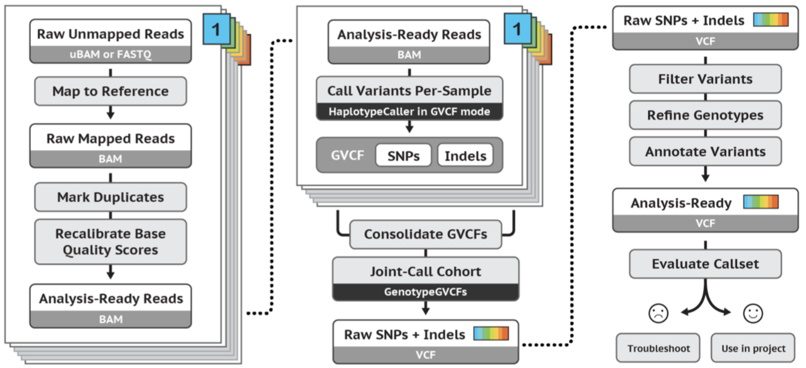

Variant calling preparation
Learning outcomes¶
After having completed this chapter you will be able to:
- Describe how variant information is stored in a variant call format (
.vcf) file - Describe the 'missing genotype problem' when calling variants of multiple samples, and the different methods on how this can be solved
- Applying Base Quality Score Recalibration on an alignment file
Material¶
GATK best practices germline short variant workflow:

Exercises¶
1. Indexing, indexing, indexing¶
Many algorithms work faster, or only work with an index of their (large) input files. In that sense, gatk is no different from other tools. The index for a reference needs to be created in two steps:
cd ~/project/data/reference
samtools faidx <reference.fa>
gatk CreateSequenceDictionary --REFERENCE <reference.fa>
Also input vcf files need to be indexed. This will create a .idx file associated with the .vcf. You can do this like this:
Exercise: Create two scripts in A-prepare_references to generate the required indexes:
A03_create_vcf_indices.sh, in which you create indices for:- A part of the dbsnp database:
variants/GCF.38.filtered.renamed.vcf - A part of the 1000 genomes indel golden standard:
variants/1000g_gold_standard.indels.filtered.vcf
- A part of the dbsnp database:
A04_create_fasta_index.sh, in which you create an index for:- The reference genome
reference/Homo_sapiens.GRCh38.dna.chromosome.20.fa
- The reference genome
Note
Indexes are often stored in the same directory as the indexed file. For the vcf and fasta indexes this is also the case.
Answer
Creating the indices for the vcfs:
#!/usr/bin/env bash
cd ~/project/data
gatk IndexFeatureFile --input variants/1000g_gold_standard.indels.filtered.vcf
gatk IndexFeatureFile --input variants/GCF.38.filtered.renamed.vcf
Creating the index for the reference genome:
Chromosome names
Unlike IGV, gatk requires equal chromosome names for all its input files and indexes, e.g. in .fasta, .bam and .vcf files. In general, for the human genome there are three types of chromosome names:
- Just a number, e.g.
20 - Prefixed by
chr. e.g.chr20 - Refseq name, e.g.
NC_000020.11
Before you start the alignment, it's wise to check out what chromosome naming your input files are using, because changing chromosome names in a .fasta file is easier than in a .bam file.
If your fasta titles are e.g. starting with a number you can add chr to it with sed:
You can change chromsome names in a vcf with bcftools annotate:
2. Base Quality Score Recalibration (BQSR)¶
BQSR evaluates the base qualities on systematic error. It can ignore sites with known variants. BQSR helps to identify faulty base calls, and therefore reduces the chance on discovering false positive variant positions.
BQSR is done in two steps:
- Recalibration with
gatk BaseRecalibrator - By using the output of
gatk BaseRecalibrator, the application to the bam file withgatk ApplyBQSR
Exercise: Check out the documentation of the tools. Which options are required?
Answer
For gatk BaseRecalibrator:
--reference--input--known-sites--output
For gatk ApplyBQSR:
--bqsr-recal-file--input--output
Exercise: Create a script in B-mother_only called B09_perform_bqsr.sh to execute the two bqsr commands. Do this with the required options on mother.rg.md.bam. At --known-sites specify variants/1000g_gold_standard.indels.filtered.vcf and variants/GCF.38.filtered.renamed.vcf.
Multiple inputs for same argument
In some cases you need to add multiple inputs (e.g. multiple vcf files) into the same argument (e.g. --known-sites). To provide multiple inputs for the same argument in gatk, you can use the same argument multiple times, e.g.:
Answer
#!/usr/bin/env bash
cd ~/project
mkdir -p results/bqsr
gatk BaseRecalibrator \
--reference data/reference/Homo_sapiens.GRCh38.dna.chromosome.20.fa \
--input results/alignments/mother.rg.md.bam \
--known-sites data/variants/GCF.38.filtered.renamed.vcf \
--known-sites data/variants/1000g_gold_standard.indels.filtered.vcf \
--output results/bqsr/mother.recal.table
gatk ApplyBQSR \
--input results/alignments/mother.rg.md.bam \
--bqsr-recal-file results/bqsr/mother.recal.table \
--output results/bqsr/mother.recal.bam
Exercise: Place these commands in a 'for loop', that performs the BQSR for mother, father and son. Do this with a script called C05_perform_bqsr.sh in C-all_samples.
Answer
#!/usr/bin/env bash
cd ~/project
for SAMPLE in mother father son
do
gatk BaseRecalibrator \
--reference data/reference/Homo_sapiens.GRCh38.dna.chromosome.20.fa \
--input results/alignments/"$SAMPLE".rg.md.bam \
--known-sites data/variants/GCF.38.filtered.renamed.vcf \
--known-sites data/variants/1000g_gold_standard.indels.filtered.vcf \
--output results/bqsr/"$SAMPLE".recal.table
gatk ApplyBQSR \
--input results/alignments/"$SAMPLE".rg.md.bam \
--bqsr-recal-file results/bqsr/"$SAMPLE".recal.table \
--output results/bqsr/"$SAMPLE".recal.bam
done